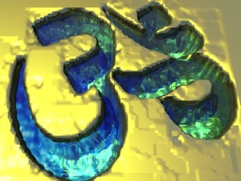

Sacred Texts Hinduism
|  | From the Upanishadsby Charles Johnston[1899] |
This short book contains translations from three crucial Upanishads, the Katha, Prasna and Chhandogya (Khandogya in SBE). The elegant, lucid translation makes this a delight to read.--J.B. Hare